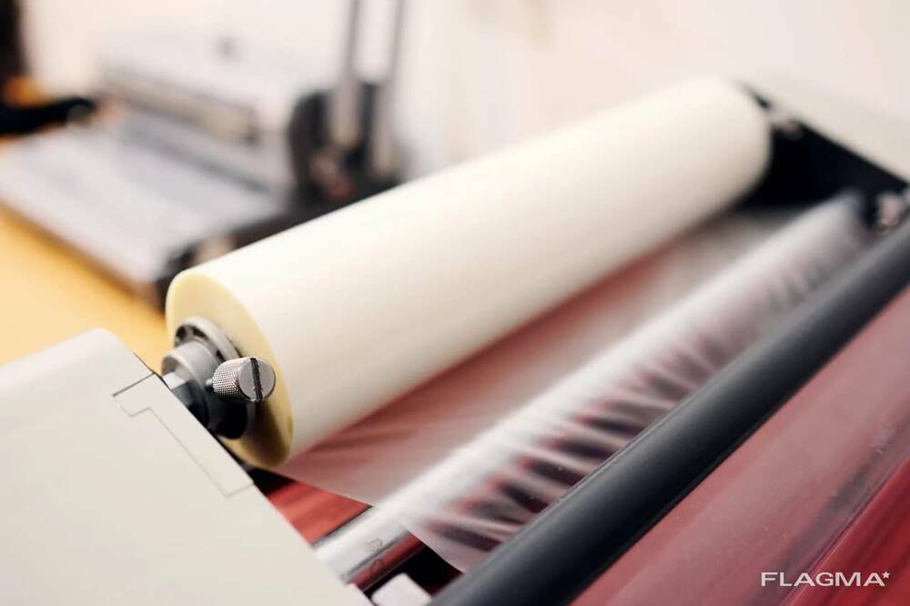
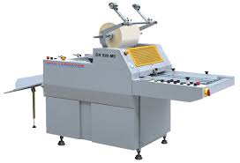
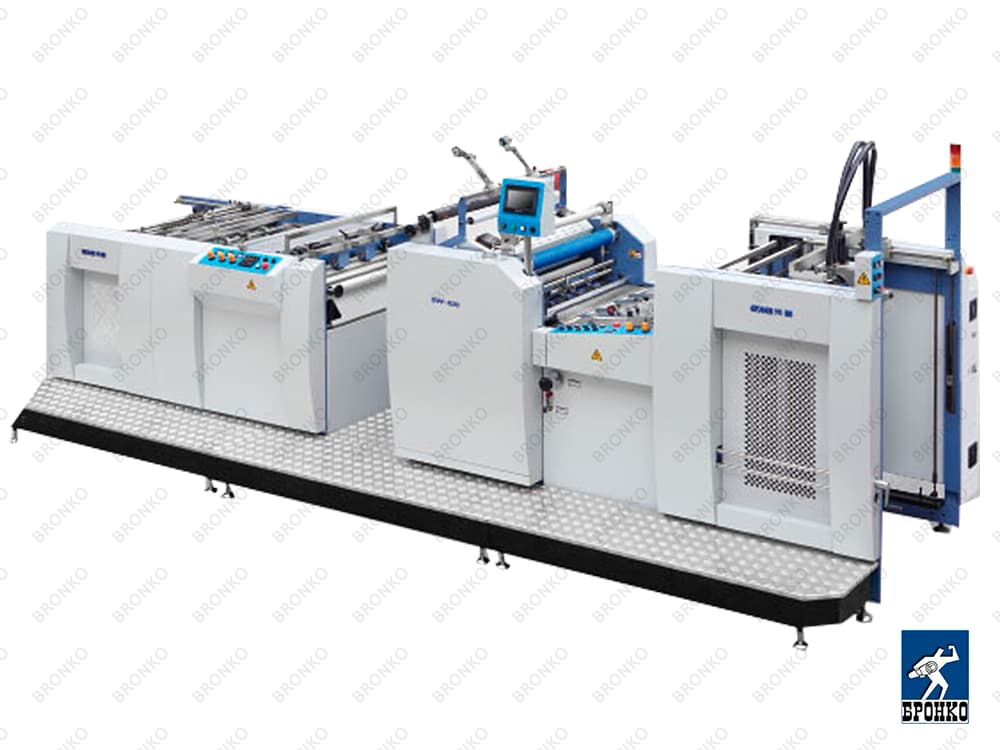
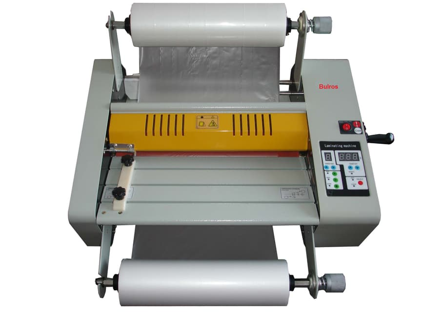
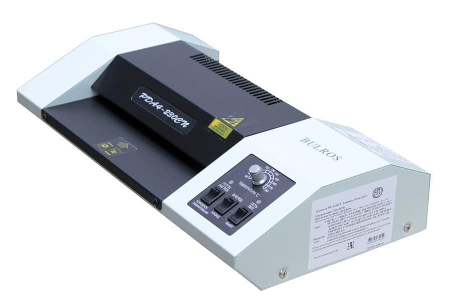

Ламинация
Ламинация – это процесс нанесения на готовую полиграфическую продукцию специальной полимерной пленки, имеющей клеевой слой для сцепления с бумагой, картоном и прочими материалами.
Виды ламинации в зависимости от вида пленки
В зависимости от типа используемого оборудования и вида расходного материала различают рулонную и пакетную ламинацию.
-
Рулонная ламинация – используется для продукции средних и больших форматов от А3 до А0. Может быть
холодная и горячая. Может быть одно- или двусторонняя. Оптимальна для больших и средних тиражей
продукции.

-
Пакетная ламинация – используется для единичныз экземпляров и небольших тиражей печатной продукции
небольших форматов (до А3). Это всегда двусторонняя ламинация – полиграфическое изделие помещается в
конверт из пленки одного из стандартных размеров и припрессовывается горячим способом. Края
ламинирующей пленки выступают на 3-5 мм и обеспечивают надежную защиту торцов от влаги.

Горячее ламинирование происходит под воздействием высокой температуры и давления с использованием специализированных пленок с термоклеевым слоем, который активизируется под воздействием высоких температур.
Ламинация выполняет как декоративные, так и защитные функции:
- улучшение внешнего вида, создание дополнительного декоративного эффекта (глянцевая, матовая или бархатистая поверхность(«Soft Touch»))
- защита поверхности изделия от влаги и внешнего воздействия, в т.ч. механических повреждений, истирания и различных загрязнений, что продлевает срок службы изделия и позволяет ему дольше сохранять первоначальный внешний вид
- возможность придания изделию дополнительной плотности, жесткости или большей толщины
Ламинация может быть односторонней (пленка покрывает одну из сторон листа) и двусторонней (пленка покрывает лицевую и оборотную сторону листа).
При ламинации пленка приклеивается к поверхности изделия целиком по всей площади, и снять пленку без повреждения бумажного материала или красочного слоя невозможно.
Виды пленок для ламинации:
Сегодня предлагаются различные варианты, можно выбрать: Soft Touch, глянцевую или матовую ламинацию. Каждый вариант имеет свои особенности и преимущества, рассмотрим подробно:
- Soft Touch обеспечивает материал приятным на ощупь бархатистым покрытием. Одновременно придается больше оригинальности. Не дает бликов, насыщенность цвета и контрастность изображения сохраняются. Подобное решение будет особенно актуальным для издательств, которым важно придать большей выразительности и неповторимости.
- Матовая, с ее помощью будет обеспечиваться элегантность. Придается мягкость и гладкость. Такая ламинация может рассматриваться для журналов, обложка которых имеет высокого качества изображения и отличается изысканностью дизайна.
- Глянцевая, она придает обложке насыщенный и яркий вид. С ее помощью многократно улучшается яркость и контрастность нанесенных на обложку изображений. Этот вид ламинации является наиболее популярным в печати журналов.
- Жемчужная(голографическая), она придает обложке дополнительного элемента декора, а именно легкий и мягкий жемчужный блеск. С помощью данного варианта можно будет создавать оригинальные эффекты, добавляя дизайну обложки глубины и изящества.
- Существуют также текстурные (создают объем и придают поверхности определенную текстуру: «лен», «песок», «кожа», «дерево»), голографические, цветные и зеркальные пленки для ламинации, которые являются более дорогими по стоимости, поэтому используются значительно реже по сравнению с глянцевыми и матовыми пленками.
Мы рады предложить нашим клиентам любые услуги по ламинации, так как наше предприятие располагает очень большим парком оборудования.
Ламинатор промышленный рулонный SFML-520

Автоматический ламинатор модель SW-820

Ламинатор Bulros FM480

Пакетный ламинатор
